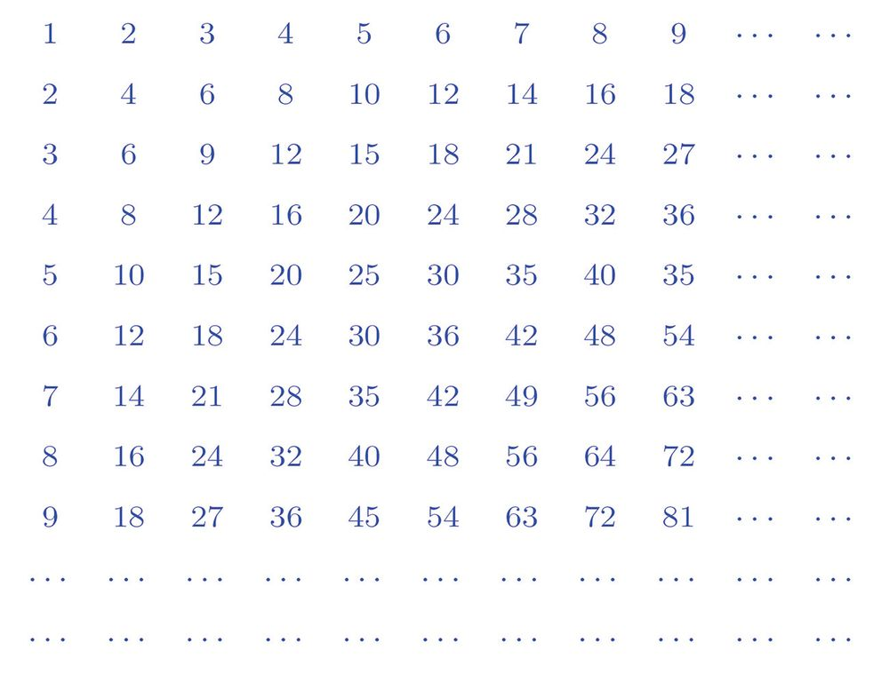
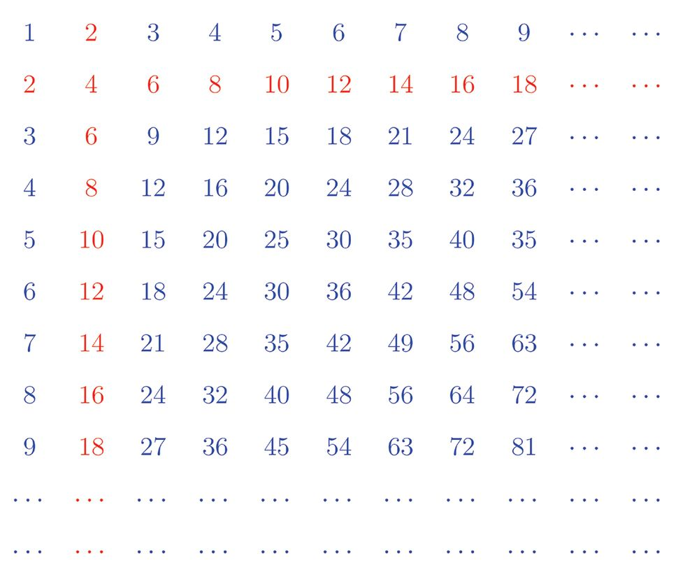
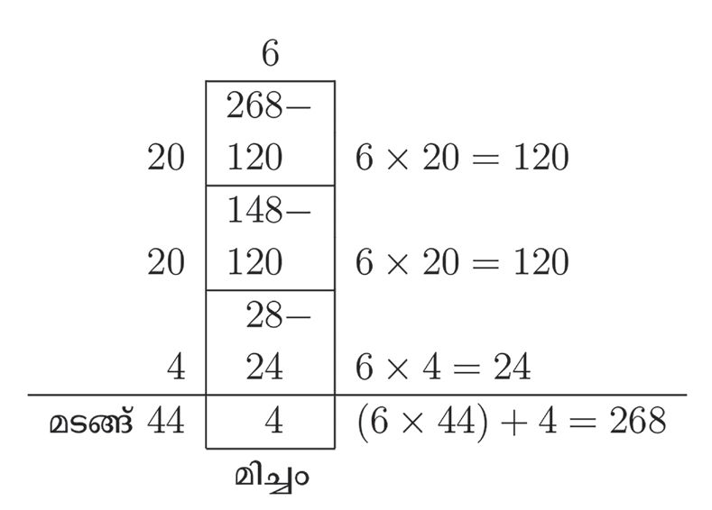
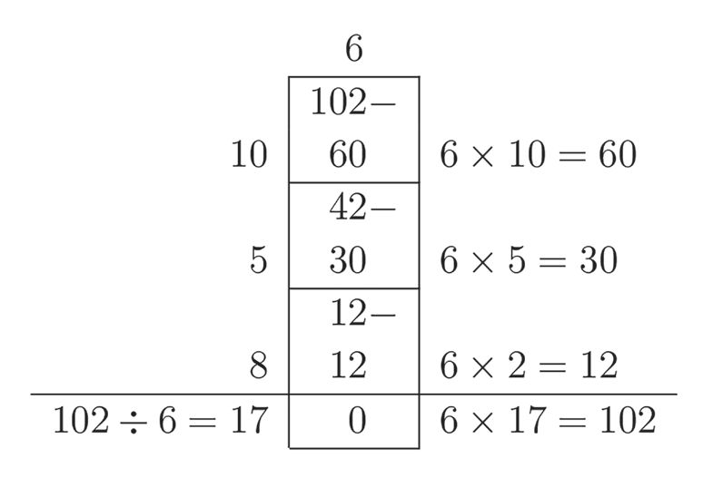
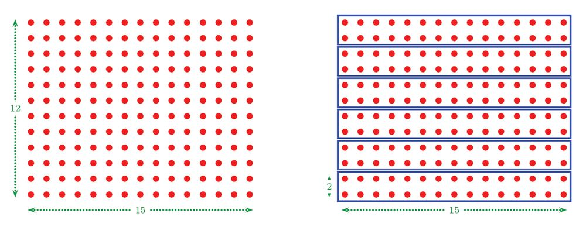
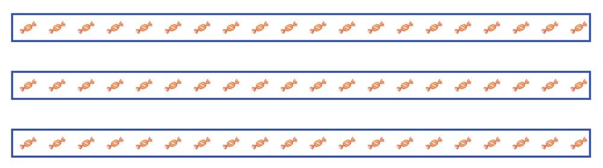
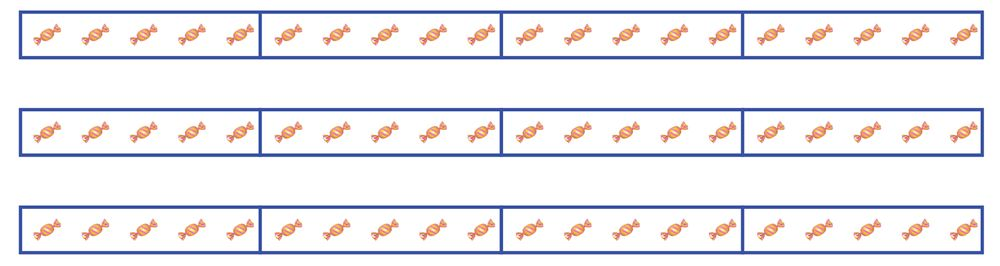

സംഖ്യകൾക്കുള്ളിൽ
11 സംഖ്യകൾക്കുള്ളിൽ ഗുണനവും ഗുണിതവും ഈ പട്ടിക നോോക്കൂ:
വരികളും നിരകളും എഴുതിയിരിക്കുന്നത് എങ്ങനെയാണ് ? ഒന്നാം വരിയിലും, ഒന്നാം നിരയിലും എണ്ണൽസംഖ്യകൾ. രണ്ടാം വരിയിലും രണ്ടാം നിരയിലുമോോ ?
125



സംഖ്യകൾക്കുള്ളിൽ
11 സംഖ്യകൾക്കുള്ളിൽ ഗുണനവും ഗുണിതവും ഈ പട്ടിക നോോക്കൂ:
വരികളും നിരകളും എഴുതിയിരിക്കുന്നത് എങ്ങനെയാണ് ? ഒന്നാം വരിയിലും, ഒന്നാം നിരയിലും എണ്ണൽസംഖ്യകൾ. രണ്ടാം വരിയിലും രണ്ടാം നിരയിലുമോോ ?
125



ഗണിതം സ്റ്റാൻഡേർഡ് V
എണ്ണൽസംഖ്യകളുടെ രണ്ട് മടങ്ങുകൾ കണക്കിന്റെ ഭാഷയിൽ, 1, 2, 3, . . . എന്നീ സംഖ്യകളെ 2 കൊൊണ്ട് ഗുണിച്ച് കിട്ടുന്ന സംഖ്യകൾ. ഇത് അല്പം ചുരുക്കി, 2 ന്റെ ഗുണിതങ്ങൾ (multiples of 2) എന്നും പറയാം. അപ്പപോൾ മൂന്നാമത്തെ വരിയിലോോ ? പൊൊതുവേ പറഞ്ഞാൽ, ഒരു എണ്ണൽ സംഖ്യയുടെ ഗുണിതങ്ങൾ (multiples) എന്നു പറയുന്നത്, 1, 2, 3, എന്നീ സംഖ്യകളെ ആ സംഖ്യകൊൊണ്ട് ഗുണിച്ചു കിട്ടുന്നവയാണ്.
അപ്പപോൾ, 2-ാം വരിയിൽ 2 ന്റെ ഗുണിതങ്ങൾ. 3-ാം വരിയിൽ 3 ന്റെ ഗുണിതങ്ങൾ.
എന്നിങ്ങനെ പറയാം 1-ാം വരിയിലോോ ?
126




സംഖ്യകൾക്കുള്ളിൽ
ഏത് എണ്ണൽസംഖ്യയും 1 ന്റെ ഗുണിതമാണല്ലലോ. അപ്പപോൾ ഒരു ചോോദ്യയം: 48 എന്ന സംഖ്യ 6 ന്റെ ഗുണിതമാണോോ ? 6-ാം വരിയിലെ 8-ാം സംഖ്യ 48 ആണല്ലലോ. അപ്പപോൾ 6 × 8 = 48
എന്നു കാണാം. കുറേക്കൂടി വലിയ സംഖ്യ ആയാലോോ ? ഉദാഹരണമായി, 102 എന്ന സംഖ്യ 6 ന്റെ ഗുണിതമാണോോ ? പട്ടിക കുറേക്കൂടി വലുതാക്കിയാൽ കണ്ടുപിടിക്കാം. അല്ലാതെ കണ്ടുപിടിക്കുന്ന തെങ്ങനെ ? 6 നെ ഏതെങ്കിലും സംഖ്യകൊൊണ്ട് ഗുണിച്ചാൽ 102 കിട്ടുമോോ എന്നാണ് ചോോദ്യയം ? അത് അറിയാൻ, 102 നെ 6 കൊൊണ്ടു ഹരിച്ചു നോോക്കിയാൽ പോോരേ ?
ഇതിൽനിന്ന്, 102 = 6 × 17
എന്ന് കാണാം. അപ്പപോൾ 102 എന്ന സംഖ്യ 6 ന്റെ ഗുണിതമാണ്. ഈ ഹരണത്തിലൂടെ മറ്ററൊരു കാര്യവും കാണാം: 102 = 17 × 6 ആയതിനാൽ 102 എന്ന സംഖ്യ 17 ന്റെയും ഗുണിതമാണ്. ഇനി 268 ആയാലോോ ?
127


ഗണിതം സ്റ്റാൻഡേർഡ് V
ഇതിൽനിന്ന്, 268 = (6 × 44) + 4
എന്നാണല്ലലോ കിട്ടുന്നത്. അതായത് 268 എന്ന സംഖ്യ 6 × 44 നേക്കാൾ വലുതും 6 × 45 നേക്കാൾ ചെറുതും ആണ് (അതെങ്ങനെ?). അതിനാൽ 268 എന്ന സംഖ്യ 6 ന്റെ ഗുണിതമല്ല. അപ്പപോൾ പൊൊതുവെ ഒരു സംഖ്യ മറ്ററൊരു സംഖ്യയുടെ ഗുണിതമാണോോ എന്നു പരിശോോധിക്കുന്നത് എങ്ങനെ ? ഒരു സംഖ്യയെ ഒരു സംഖ്യകൊൊണ്ട് മിച്ചമില്ലാതെ ഹരിക്കാൻ കഴിഞ്ഞാൽ, ആദ്യത്തെ സംഖ്യ രണ്ടാമത്തെ സംഖ്യയുടെ ഗുണിതമാണ്; മിച്ചം വന്നാൽ ഗുണിതമല്ല.
ചുവടെയുള്ള സംഖ്യയാജോോടികൾ ഓരോോന്നിലും, വലിയ സംഖ്യ ചെറിയ സംഖ്യയുടെ ഗുണിതമാണോോ എന്നു കണ്ടുപിടിക്കൂ. (i) 7, 91
(ii) 9, 127
(iii) 12, 136
(iv) 15, 225
ഹരണവും ഘടകവും ഗുണിതമാണോോ എന്നറിയാൻ, ഹരിച്ചു നോോക്കിയാൽ മതി എന്നുകണ്ടല്ലലോ. ഉദാഹരണമായി, 72 ÷ 4 = 18
ആയതിനാൽ 72 എന്ന സംഖ്യ 4 ന്റെ ഗുണിതമാണ്. 72 നെ 4 കൊൊണ്ട് മിച്ചമില്ലാതെ ഹരിക്കാം.
എന്നതുതന്നെ മറ്ററൊരു രീതിയിലും പറയാം. 4 എന്ന സംഖ്യ 72 ന്റെ ഘടകം (factor) ആണ്.
പൊൊതുവെ പറഞ്ഞാൽ: ഒരു സംഖ്യയുടെ ഘടകങ്ങൾ എന്നു പറയുന്നത്, ആ സംഖ്യയെ മിച്ചമില്ലാതെ ഹരിക്കാൻ കഴിയുന്ന സംഖ്യകളെയാണ്.
128


സംഖ്യകൾക്കുള്ളിൽ
രണ്ട് സംഖ്യകൾ തമ്മിലുള്ള ഒരേ ബന്ധം തന്നെ ഗുണനരൂപത്തിലും ഹരണരൂപത്തിലും എഴുതുന്നത് ഹരണരീതികൾ എന്ന പാഠത്തിൽ കണ്ടല്ലലോ. ഉദാഹരണമായി, സംഖ്യകൾ
ഗുണനം
6, 54
54 = 6 × 9
ഹരണം 54 ÷ 6 = 9 54 ÷ 9 = 6
ഇനി ഇതുതന്നെ ഗുണിതമായും ഘടകമായും പറയാം: സംഖ്യകൾ
ഗുണനം
ഹരണം
6 ന്റെ ഒരു
6, 54
54 = 6 × 9
54 ന്റെ ഒരു
ഗുണിതമാണ് 54
54 ÷ 6 = 9
ഘടകമാണ് 6
9 ന്റെ ഒരു
54 ÷ 9 = 6
54 ന്റെ ഒരു
ഗുണിതമാണ് 54
ഘടകമാണ് 9
ചുവടെപ്പറയുന്ന ഓരോോ ജോോടി സംഖ്യകൾ തമ്മിലുള്ള ബന്ധങ്ങൾ ഗുണനഹരണമായും, ഗുണിത - ഘടകമായും പട്ടികയായി എഴുതിനോോക്കൂ: (i) 9, 72
(ii) 12, 156
(iii) 13, 169
(iv) 25, 375
ഘടകം, ഗുണനം, ഹരണം ഒരു സംഖ്യയെ ഘടകങ്ങളുടെ ഗുണനഫലമായി പിരിച്ചെഴുതുന്നത്, ചില ക്രിയകൾ എളുപ്പമാക്കും. ഉദാഹരണമായി 15 × 12 കണക്കാക്കണമെന്നു കരുതുക. 12 നെ 2 × 6 എന്ന് ഘടകങ്ങളുടെ ഗുണനഫലമായി എഴുതിയാൽ 15 × 12 = 15 × 2 × 6
എന്നെഴുതാം. ഇതിലെ 15 × 2 = 30 എന്ന് മനസ്സിൽത്തന്നെ കണക്കാക്കാമല്ലലോ; തുടർന്ന് 3 × 6 = 18 എന്നും കൂടി ഓർത്താൽ 15 × 12 = (15 × 2) × 6 = 30 × 6 = 180
എന്ന് മനസ്സിൽത്തന്നെ കണക്കാക്കാം.
129



ഗണിതം സ്റ്റാൻഡേർഡ് V
ഈ ക്രിയകൾ ചിത്രരൂപത്തിലും കാണാം:
ഇനി 18 × 16 കണക്കാക്കാൻ, 16 നെ 2 × 2 × 2 × 2 എന്നു പിരിച്ചെഴുതിയാൽ 18 × 16 = 18 × 2 × 2 × 2 × 2
എന്നെഴുതാം. ഓരോോ തവണ 2 കൊൊണ്ട് ഗുണിക്കുമ്പപോഴും സംഖ്യ ഇരട്ടിക്കുന്നു എന്നത് ഓർത്താൽ ഈ ഗുണനങ്ങൾ 36, 72, 144, 288
എന്ന് വേഗം കണക്കുകൂട്ടാം. അതായത് 18 × 16 = 288
ചുവടെയുള്ള ഗുണനഫലങ്ങൾ കണക്കാക്കി നോോക്കൂ: (i) 12 × 25
(ii) 35 × 18
(iii) 125 × 8
(iv) 125 × 24
ഇനി ഘടകങ്ങൾ ഉപയോോഗിച്ച് ചില ഹരണം എങ്ങനെ എളുപ്പമാക്കാം എന്നതിന്റെ ഒരു ഉദാഹരണം നോോക്കാം: 75 ബിസ്കറ്റ്, 15 കുട്ടികൾക്ക് വീതിക്കണം. വീതം
ഒരുപോോലെയാകാൻ ഓരോോരുത്തർക്കും എത്ര ബിസ്കറ്റ് കൊൊടുക്കണം ? ഇതു കണക്കാക്കാൻ, 75 നെ 15 കൊൊണ്ട് ഹരിക്കുകയാണല്ലോോ വേണ്ടത്. നേരിട്ട് ഹരിക്കുന്നതിനു പകരം, ഇങ്ങനെ ആലോോചിക്കാം: 15 = 5 × 3 ആണല്ലോോ. അപ്പോോൾ കുട്ടികളെ 5 പേർ വീതമുള്ള 3 കൂട്ടങ്ങളാക്കാം.
130




സംഖ്യകൾക്കുള്ളിൽ
ഇനി ഓരോോ കൂട്ടത്തിനും 75 ÷ 3 = 25 ബിസ്കറ്റ് കൊൊടുത്താൽപ്പോോരേ ? അത് ഓരോോ കുട്ടത്തിലുള്ളവരും ഒരുപോോലെ വീതിച്ചെടുക്കുമ്പപോൾ, ഓരോോരുത്തർക്കും 25 ÷ 5 = 5 ബിസ്കറ്റ് വീതം കിട്ടുകയും ചെയ്യും. ഇവിടെ ചെയ്തത് എന്താണ് ? 75 നെ 15 കൊൊണ്ട് ഹരിക്കുന്നതിന് പകരം, ആദ്യയം 3 കൊൊണ്ട് ഹരിച്ച്, ഹരണഫലം 5 കൊൊണ്ടും ഹരിച്ചു.
മറ്ററൊരു കണക്ക് നോോക്കൂ. 60 മിഠായി 12 പായ്ക്കറ്റുകളിൽ ഒരുപോോലെ നിറയ്ക്കണം. ഓരോോ പായ്ക്കറ്റിലും എത്ര മിഠായി വീതം ഇടണം ?
ഇവിടെ 60 നെ 12 സമഭാഗങ്ങളാക്കണം; അതായത്, 60 നെ 12 കൊൊണ്ട് ഹരിക്കണം 12 = 3 × 4 എന്നു ഘടകങ്ങളുടെ ഗുണനഫലമായി പിരിച്ചെഴുതാമല്ലലോ. ഇനി ആദ്യയം 60 മിഠായി 3 സമഭാഗങ്ങളാക്കുക. ഓരോോ ഭാഗത്തിലും 20 എന്ന് മനസ്സിൽത്തന്നെ കണക്കാക്കാം (6 = 3 × 2 എന്നനോർത്താൽ മതി).
60 ÷ 3 = 20
ഇനി ഈ 3 ഭാഗങ്ങൾ ഓരോോന്നിനെയും 4 സമഭാഗങ്ങളാക്കിയാൽ, ആകെ 4 × 3 = 12 സമഭാഗങ്ങളായില്ലേ ? ഓരോോ ഭാഗത്തിലും 20 ÷ 4 = 5 എന്നു കിട്ടുകയും ചെയ്യും. അതായത് ഓരോോ പായ്ക്കറ്റിലും 5 മിഠായി വീതം ഇടണം.
60 ÷ 12 = 5
131


ഗണിതം സ്റ്റാൻഡേർഡ് V
അപ്പപോൾ 12 കൊൊണ്ട് ഹരിക്കാൻ, ആദ്യയം 3 കൊൊണ്ട് ഹരിച്ച്, ഹരണഫലത്തെ 4 കൊൊണ്ട് ഹരിച്ചാൽ മതി (മറിച്ചും ആവാം). മറ്ററൊരു ഉദാഹരണമായി 288 ÷ 16 നോോക്കാം. 16 = 2 × 2 × 2 × 2 എന്നെഴുതിയാൽ, ഈ ഹരണഫലം കണക്കാക്കുന്നതിന് 2 കൊൊണ്ട് 4 തവണ ഹരിച്ചാൽ മതി എന്ന് കാണാം. 2 കൊൊണ്ട് ഹരിച്ചാൽ പകുതിയാകും എന്നും കൂടി ഓർത്താൽ, ഹരണഫലങ്ങൾ 144, 72, 36, 18
എന്ന് വേഗം കണക്കാക്കാം. അതായത് 288 ÷ 16 = 18
ചുവടെയുള്ള ഹരണക്രിയകൾ ചെയ്തുനോോക്കൂ. (i) 90 ÷ 15
(ii) 900 ÷ 18
(iv) 168 ÷ 24
(v) 210 ÷ 42
(iii) 160 ÷ 32
പൊൊതുഘടകങ്ങൾ കഴിഞ്ഞ ഭാഗത്തിലെ അവസാനത്തെ കണക്ക് എങ്ങനെയാണ് ചെയ്തത് ? ഇങ്ങനെ ആലോോചിക്കാം: 210 ÷ 42 42 = 2 × 21
210 ÷ 2 = 105
105 ÷ 21 21 = 3 × 7
105 ÷ 3 = 35 35 ÷ 7
35 = 7 × 5
35 ÷ 7 = 5
210 ÷ 42 = 5
ഇവിടെ എന്താണ് ചെയ്തത് ? (1) 210 നെ 42 കൊൊണ്ട് ഹരിക്കണം. (i) ആദ്യയം 42 ന്റെ ഒരു ഘടകമായ 2 കൊൊണ്ട് 210 നെ ഹരിച്ചു. (ii) 2 എന്നത് 210 ന്റെയും ഘടകമായതിനാൽ, മിച്ചമില്ലാതെ ഹരിച്ച്, ഹരണഫലം 105 എന്ന് കിട്ടി.
132


സംഖ്യകൾക്കുള്ളിൽ
(2) ഇനി 210 ലും 42 ലും ഘടകമായി വരുന്ന 2 നെ ഒഴിവാക്കി, 105 നെ 21
കൊൊണ്ടു ഹരിച്ചാൽ മതി. (i) അതിന് ആദ്യയം 21 ന്റെ ഒരു ഘടകമായ 3 കൊൊണ്ട് 105 നെ ഹരിച്ചു. (ii) 3 എന്നത് 105 ന്റെയും ഘടകമായതിനാൽ, മിച്ചമില്ലാതെ ഹരിച്ച്, ഹരണഫലം 35 എന്നുകിട്ടി. (3) ഇനി 105 ലും 21 ലും ഘടകമായി വരുന്ന 3 നെ ഒഴിവാക്കി, 35 നെ 7
കൊൊണ്ടു ഹരിച്ചാൽ മതി. (4) ഈ ഹരണഫലം 5 എന്ന് കിട്ടി.
ഈ ചെയ്തതെല്ലാം ഒറ്റവാക്യത്തിൽ ഒതുക്കാം: 42, 210 എന്നീ രണ്ട് സംഖ്യകളുടെയും ഘടകങ്ങളായ 2, 3, 7 എന്നീ
സംഖ്യകൾ ഓരോോന്നായി ഒഴിവാക്കിയാൽ മതി. കഴിഞ്ഞ ഭാഗത്തിലെ മറ്ററൊരു കണക്കും ഇങ്ങനെ എഴുതിനോോക്കാം: 168 ÷ 24 24 = 2 × 12
168 ÷ 2 = 84 84 ÷ 12
12 = 3 × 4
84 ÷ 3 = 28 28 ÷ 4
28 = 4 × 7
28 ÷ 4 = 7
168 ÷ 24 = 7
ഈ കണക്കിലും ചെയ്തത് എന്താണ് ? 24, 168 എന്നീ രണ്ട് സംഖ്യകളുടെയും ഘടകങ്ങളായ 2, 3, 4 എന്നീ
സംഖ്യകൾ ഓരോോന്നായി ഒഴിവാക്കി. രണ്ട് സംഖ്യകളുടെയും ഘടകങ്ങളായ സംഖ്യകളെ ആ സംഖ്യകളുടെ പൊൊതുഘടകങ്ങൾ (common factors) എന്നാണ് പറയുന്നത്.
അപ്പപോൾ ഈ ഉദാഹരണങ്ങളിൽ ഉപയോോഗിച്ച രീതി ഇങ്ങനെ പറയാം:
133


ഗണിതം സ്റ്റാൻഡേർഡ് V
സംഖ്യകൾ തമ്മിലുള്ള ഹരണത്തിൽ പൊൊതുഘടകങ്ങൾ ഒഴിവാക്കാം. ഉദാഹരണമായി 90 നെ 18 കൊൊണ്ട് ഹരിക്കുന്നതിന്, 90 = 9 × 5 × 2
18 = 9 × 2
എന്ന് കാണാൻ കഴിഞ്ഞാൽ, പൊൊതു ഘടകങ്ങളായ 9 ഉം 2 ഉം ഒഴിവാക്കി, ഹരണഫലം 5 എന്ന് കാണാം. ചുവടെയുള്ള ഹരണക്രിയകൾ പൊൊതുഘടകങ്ങൾ ഒഴിവാക്കി ചെയ്തുനോോക്കൂ: (i) 600 ÷ 150
(ii) 900 ÷ 180 (iii) 225 ÷ 75 (iv) 420 ÷ 105
134